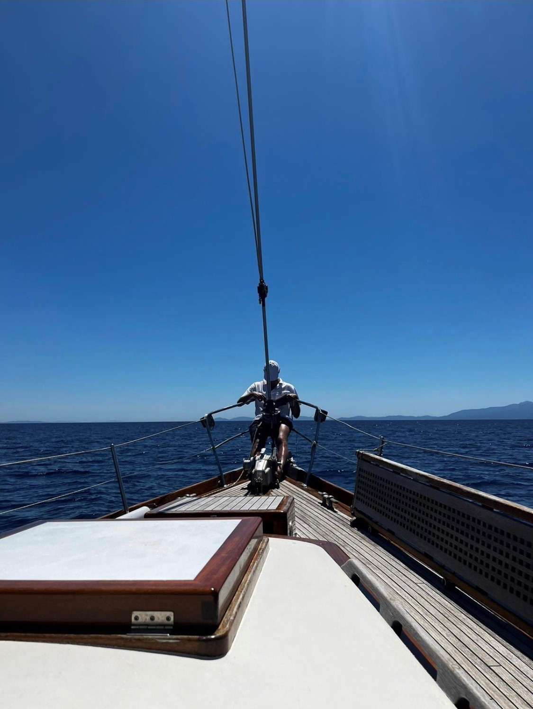
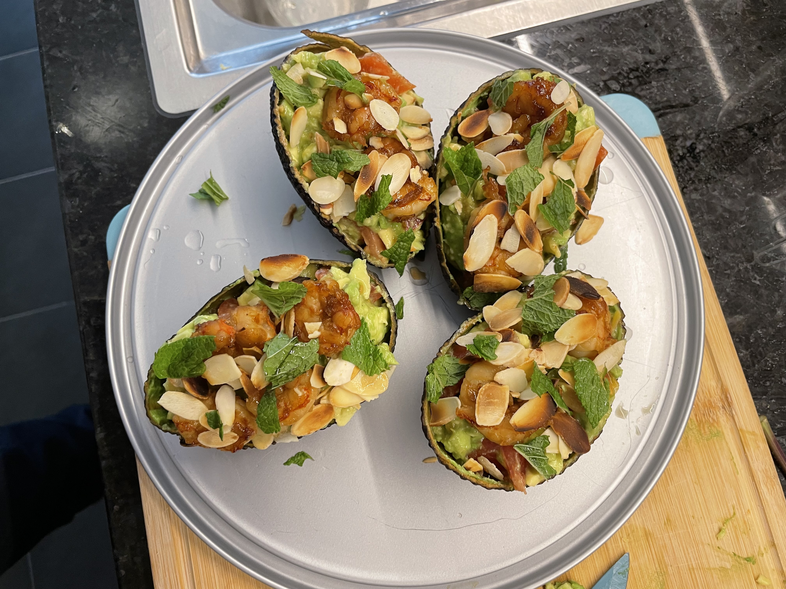

2022
September
Elul. I will always remember this month and its backcronym s.
I re-discovered some beautiful old songs as well: one, two. There would be also a three but I will keep it as a secret. Recall the intro of this specific URL. :)
And to my yet to be children I say: always walk on air like the lion's cub of the past used to do.

August
Another beautiful month, the one of understanding of The Castle of Kafka.

July
Badaboom and Rebirth. Back to me.

June
Nice sailing on the Ella. It is becoming a tradition. Always a nice way to switch off.

May
Back to the land of milk and honey.
Very nice. Met that character on the plane… was quite funny.
Thorough experience, spent some time with some young people from the italian community that did aliyah, met some IDF unit 8200 people and spent one evening with a young Canadian that decided to interrupt his PhD in physics in order to turn into an orthodox. He was studying in a yeshiva and shared a bit of the experience and his rational for going for the shidduch system. Very interesting.
As it got me fascinated I started to listen a bit of parashot interpretations each week. Very nice. Lots of food for thought. Two of the one I especially liked: one, two.
In any case was also nice to see how the morphology of Tel-Aviv changed. A bit of new few things. I was pleased to see that the land is healthy and is still rapidly changing and technically growing.
I pledge not to wait 3 years before going back. Let's aim for at least 1 time a year.

April
First half-marathon. Zurich Marathon 10/04/2022 - 01:39:09.

March
Some small kitchen experiment. It is nice to seriously cook.
Once I will have more time with less to do during my weekends will take some time to do proper stuff.

February
WE in London. The weekend the world changed. As always loved the city.

January
Grenada - sailing and enjoying the nice places that the world offered us.